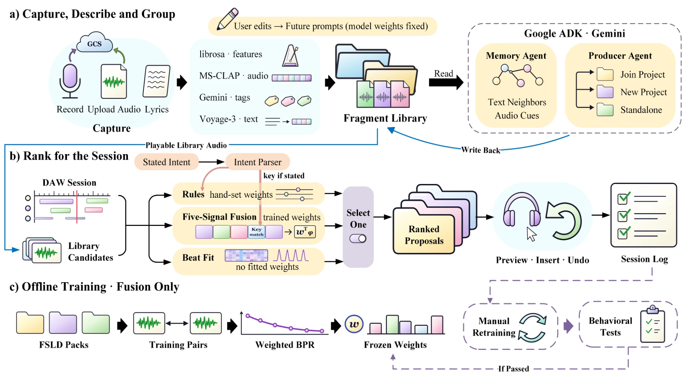
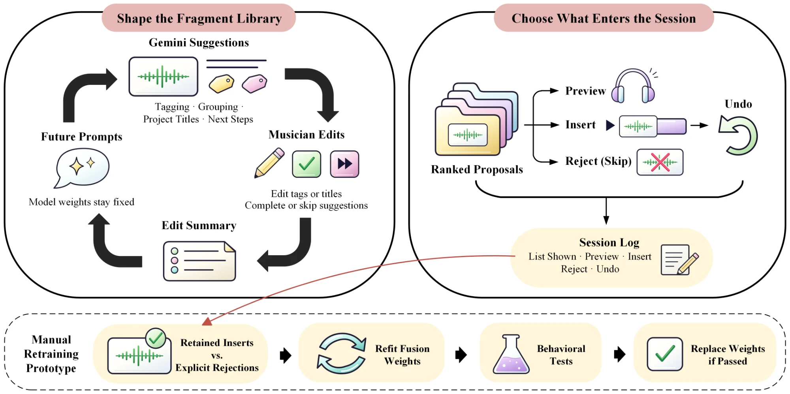

Find the hidden links between your unfinished musical ideas, and see how they could become a song.
Watch a sketch enter a session: preview, insert and undo in Audiotool · ISMIR 2026 Late-Breaking Demo
Pocket Producer grew out of my frustration with unfinished songs: voice memos, riffs, and half-written lyrics that never grow past the fragment stage. It collects them in one library, groups the fragments that could become one song into projects that explain the connection and suggest a next step, and, inside an open Audiotool session, ranks them against the arrangement.

AI disclosure: the icons in this figure were generated with GPT-6.2 Astra.
| Component | Stack | Role |
|---|---|---|
| Browser app | Next.js, TypeScript, Vercel | Library, recorder, project pages, and session panel. Runs the Audiotool Nexus SDK, so the project document and Audiotool token stay in the browser. |
| API | FastAPI on Google Cloud Run, scaled to zero when idle | Checks the Firebase sign-in, runs analysis in the background, hosts the two agents, and serves the rankers with MS-CLAP and the fusion weights (a versioned file trained offline) in memory. |
| Memory service | MongoDB MCP server on Cloud Run | Read-only library queries for the memory agent; only the API can call it. |
| Storage | MongoDB Atlas, Google Cloud Storage | Fragments, projects, settings, ranking logs, and a vector index over Voyage-3 text embeddings; audio files. |
| Hosted models | Gemini through Google ADK, Voyage-3 | Tagging, intent parsing, and the agents; text embeddings. |
Steps 1 to 4 run once per fragment; steps 5 and 6 run each time the musician asks for suggestions.
1. Capture. A fragment is a browser recording, an uploaded audio file, a typed lyric, or a sample imported from Audiotool. The API stores the audio, replies at once, and analyzes in the background, two fragments at a time.
2. Encode and describe. Audio encoding runs first, so a Gemini outage cannot block ranking: librosa measures tempo, key, 12-bin CQT chroma, and onset strength and stores beat-level frames for the first ten seconds, and a frozen MS-CLAP encoder embeds the audio. Gemini then proposes a title, tags for emotion, theme, style, and song section (verse, chorus), a potential rating, and a vocal transcript; Voyage-3 embeds the text.
3. Group. Two Google ADK agents place each fragment. The memory agent retrieves neighbors by Voyage-3 vector search; the producer agent joins a project, starts one, or leaves the fragment standalone, with my audio fusion score against the closest fragments as one cue. Audio similarity alone would group by instrument: for 586 of 594 MUSDB18-HQ stems, the nearest MS-CLAP neighbor was the same instrument from another song.
4. Project. Each project gets a title, an explanation of why its fragments connect, a summary of their key, tempo, and shared traits, a next step, and a Rescue Score: a 0 to 100 heuristic computed in code from richness, structure completeness, emotional coherence, and freshness, which suggests which project to pick up next.
5. Rank for the session. The Nexus SDK reads project tempo, track types, region positions, and up to eight audio samples; audio goes to the API only for rankers that compare sound. Gemini parses a typed intent into tags, roles, and a key only when one is stated. Three of the nine rankers:
| Ranker | Signals | Weights |
|---|---|---|
| Rules (default) | Seven metadata cues, such as tempo, role gap, stated intent, and recency | Hand-set |
| Five-signal fusion | Mean and maximum MS-CLAP cosine to the session clips, tempo, key when stated, tag Jaccard | Linear, trained with source-weighted Bayesian Personalized Ranking (BPR) on same-pack Freesound loops |
| Beat Fit | First ten seconds of session and candidate on the project’s beat grid: chroma cosine per beat and onset Pearson correlation in eight slots per beat, where both sound | None; signals are standardized across candidates and summed |
6. Preview, insert, undo. Each suggestion shows its evidence. An insert is one recorded DAW transaction, so undo removes exactly what it created.
No dataset says which sketches belong in an unfinished song, so I trained and tested on a proxy: loops from the same Freesound pack count as compatible. On 121 held-out packs, fusion beat embedding cosine on hard-similar negatives by +9.9 percentage points (pp) [+4.4, +15.4] with MS-CLAP and source-weighted BPR, and by +2.1 pp [−1.0, +5.3] with LAION-CLAP and plain BPR. On the 25 packs whose uploaders never appear in training, the first falls to +3.9 pp [−1.9, +10.3] (95% bootstrap intervals throughout).
The gain moves with encoder, training recipe, and mined negatives, so I report it as configuration sensitivity: small shifts in labels or audio representation reorder the ranking, which shows how far an offline metric can sit from what a musician intends.
I then built label-free tests that change one musical property and check which scorers respond, here a four-beat delay of each stem against its own backing.
| Scorer | Win rate of the original | 95% interval |
|---|---|---|
| Beat-aligned chroma | 74% | 69 to 78% |
| Chroma averaged over the clip | 45% | 39 to 49% |
| Mean MS-CLAP cosine | 44% | 39 to 49% |
| Five-signal fusion | 49% | 44 to 54% |
Only beat-aligned chroma prefers the original. In retrieval among 50 stems of the same type, onset patterns alone reach 53.2% Recall@1, and chroma plus onsets 52.7%.
Every model output can be corrected or undone. In the library, the musician sets grouping strictness (strict, balanced, or loose), edits tags and titles, and adds notes or comments. A note, a comment, or the refresh button makes the agents decide the fragment’s project again, and tag and title edits feed later Gemini prompts while model weights stay fixed. In a session, the musician previews, inserts, or skips each suggestion. These actions are logged for an offline refit prototype, which rejects weights that fail a behavioral test the deployed weights pass.

AI disclosure: the icons in this figure were generated with GPT-6.2 Astra.
The main lesson: sounding alike and fitting together are different relationships. That is why the rules ranker stays the default and every score comes with its evidence.
ISMIR 2026 Late-Breaking Demo · Abu Dhabi, UAE
Which fragments could grow into a piece of music with the ones already in a musician’s open project? This target has no direct labels at cold start, and audio similarity is only one observable signal for it. Pocket Producer, a retrieval prototype evaluated offline, treats this missing-label problem as a ranking and an interaction-design challenge. It fingerprints the open session and ranks candidates with a rules default and a selectable fusion of five interpretable signals trained on pack co-membership as cold-start weak supervision. On the Freesound Loop Dataset, the learned fusion’s apparent advantage varies with label construction, negative regime, and representation/training configuration. Pack co-membership is only a stand-in for the real target, and the conclusions shift with how the proxy is built and evaluated. We therefore surface retrieval as proposals the musician can inspect, preview, insert, and undo, not as automated decisions.